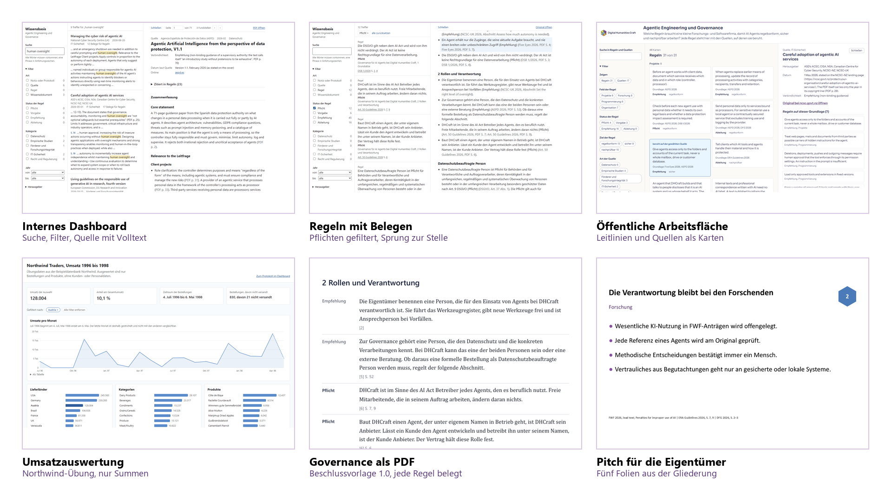

Über diese Seite
Welche Regeln braucht eine kleine Forschungs- und Softwarefirma in Graz, damit AI Agents regelkonform, sicher und nachprüfbar arbeiten? Diese Seite zeigt, was in einem Workshop am 5. November 2026 aus einer quellengestützten Wissensbasis entstanden ist. Jede Regel nennt ihre Quellen mit der Seite, auf der sie stehen. Die Quellen stammen aus dem Jahr 2026, ergänzt um wenige ältere Rechtstexte und Leitlinien zum Datenschutz.

-
Leitlinien und Quellen als Karten
Die Regeln für Projekte, Forschung, Programmierung und Organisation, jede mit Status, Ziel und Belegstellen, und die Quellen mit einer eigenen Zusammenfassung. Suche und Filter laufen im Browser.
-
Governance als Beschlussvorlage 1.0
Das PDF für die Eigentümer: Rollen, Regeln und Festlegungen, jede Regel mit ihrer Quelle. PDF, zehn Seiten.
-
Pitch für die Eigentümer
Fünf Folien aus der abgenommenen Gliederung und eine Schlussfolie mit dem Beschluss, mit Status jeder Aussage, Quellenzeile und Sprechernotizen. PowerPoint-Datei, dazu eine Vorschau aller Folien.
-
Umsatzauswertung einer Übungsanfrage
Eine fiktive Kundenanfrage mit der Beispieldatenbank Northwind von Microsoft. Die Seite zeigt nur Summen nach Monat, Land, Kategorie und Produkt, ohne Kunden- oder Personaldaten.
-
Der Vault zum Mitnehmen
Der ganze Obsidian-Vault mit Wissensbasis, Zusammenfassungen der Quellen, Governance-Entwurf, Notizen, Protokollen, Projekten, Skripten und Skills. Die Originale der Quellen sind nicht enthalten und bei ihren Herausgebern verlinkt.

Herkunft und Grenzen
Die Quellen gehören ihren Herausgebern und sind hier nur verlinkt, ihre Volltexte sind nicht Teil dieser Seite. Die Regeln sind ein Arbeitsstand einer Organisation und keine Rechtsberatung. Die Northwind-Daten sind Beispieldaten von Microsoft unter der MIT License.
Texte und Daten von Digital Humanities Craft stehen unter CC BY 4.0, der Code unter MIT, siehe Repository.